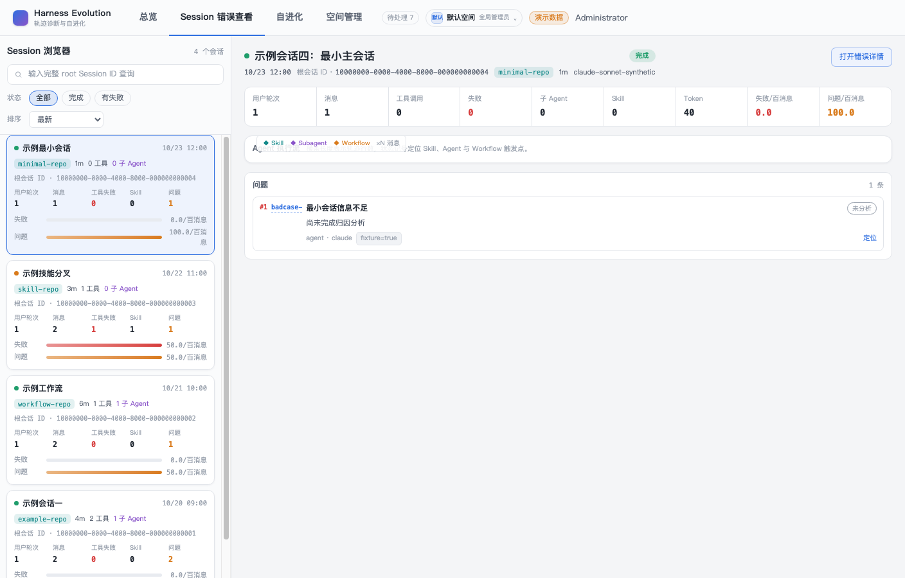
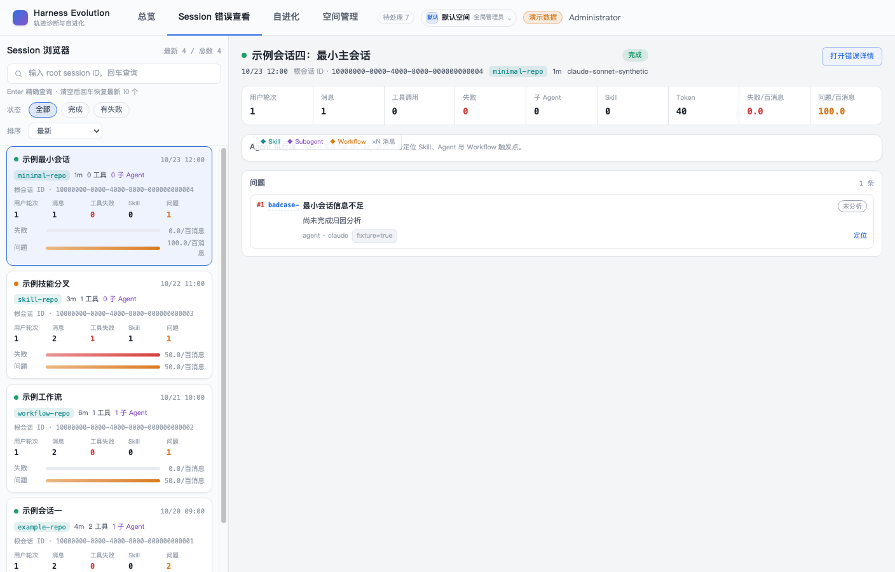
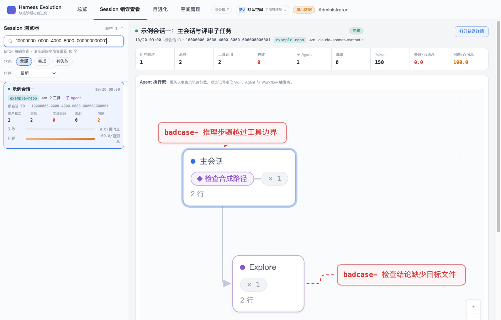
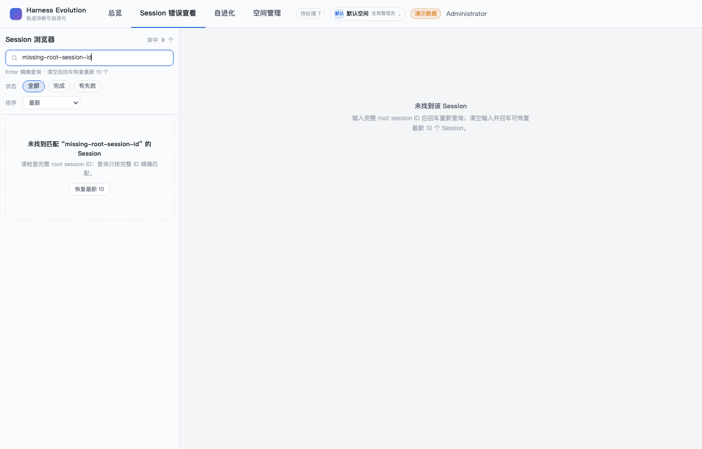
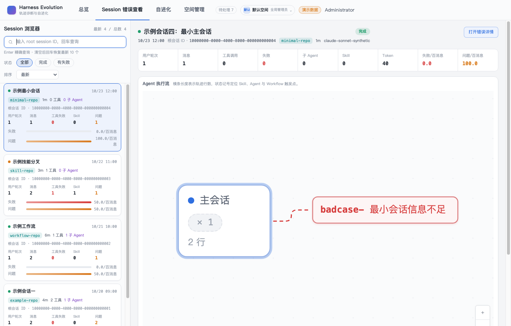
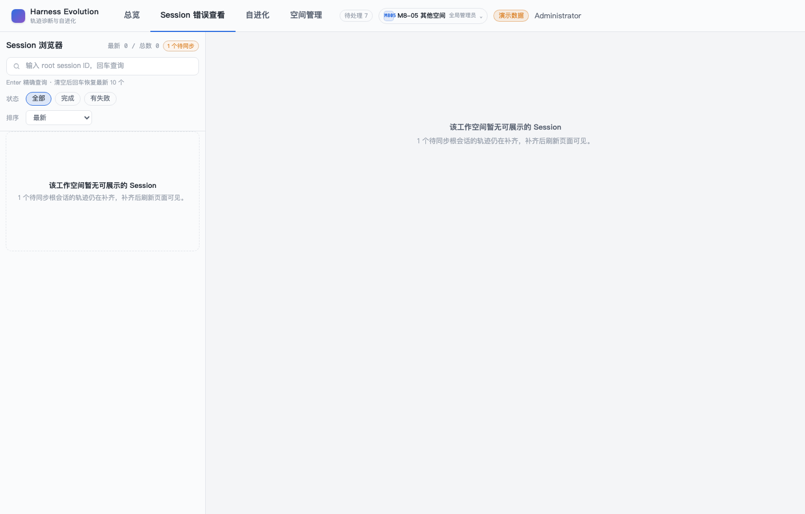
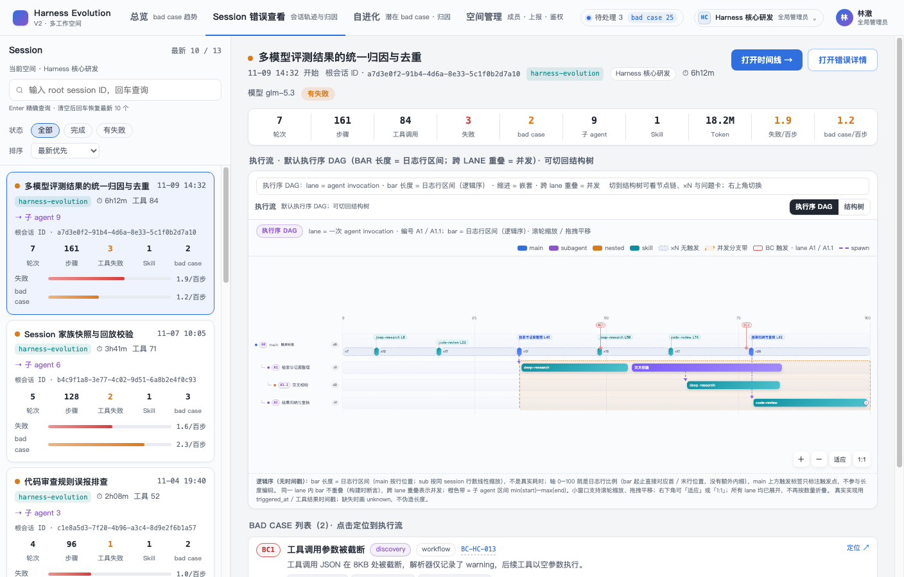

- 仓库
- Shadow-Azure/harness-evolution
- PR
- #273
- 基线
- 86ef309 (main)
- 改动
- a35f118 (agent/develop-m8-05-r2-993a4c834ceb)
- 环境
- SQLite · demo fixtures · Vite proxy · 无头 Chrome
- 视口
- 1408×900 · 浅色主题
Computer Use Smoke
M8-05 Session 最新 10 条与回车精确查询 · 冒烟报告
在真实 API（SQLite + demo fixtures）+ Vite 代理 + 无头 Chrome 中验证 Session 页首屏最新 10 条、Enter 精确命中、未命中清空右侧、清空恢复最新 10 条、跨空间隔离与待同步角标，并与 plans/ui-prototype-v2 的 Session 页做视觉对照。全部场景通过。
8冒烟场景
8通过
0缺陷
2+1E2E 用例
Environment and Artifact
2026-11-16 · macOS · Chrome headless · 1408×900Scenario Matrix
8 pass| # | 场景 | 结果 | 说明 | 证据 |
|---|---|---|---|---|
| 01 | 首屏最新 10 条与计数 | PASS | ws-default 4 条 fixture 会话；标题「最新 4 / 总数 4」；请求 limit=10。 | screenshots/01-after-default.png |
| 02 | 输入不触发列表请求 | PASS | CDP Network 计数：输入后等待 350ms，列表请求数仍为 0。 | screenshots/02-after-query-hit.png |
| 03 | Enter 精确命中完整 root ID | PASS | 输入最后一条完整 ID 后 Enter；恰好 1 次请求，命中并选中，标题「命中 1 个」。 | screenshots/02-after-query-hit.png |
| 04 | 未命中清空双侧空态 | PASS | 输入不存在的 ID 后回车；左栏「未找到匹配…」，右栏「未找到该 Session」，不保留旧会话。 | screenshots/03-after-query-miss.png |
| 05 | 清空再 Enter 恢复最新 10 条 | PASS | 清空输入并回车；恢复 4 条最新会话并自动选中第一条，列表请求 q 为空、limit=10。 | screenshots/04-after-restored.png |
| 06 | 跨空间隔离 | PASS | 第二个空间上报 pending root；在 ws-default 查询该 ID 为空，不跨空间泄漏。 | screenshots/03-after-query-miss.png |
| 07 | 待同步角标与空态 | PASS | 空空间显示「最新 0 / 总数 0」「1 个待同步」；左右空态都说明轨迹仍在补齐，补齐后刷新页面可见。 | screenshots/05-after-pending-workspace.png |
| 08 | 与原型 Session 页对照 | PASS | 计数、搜索占位符、Enter 提示、空态信息架构一致；H1 与当前空间展示位置为既有应用壳差异。 | screenshots/06-prototype-session-list.png |
Issues and Observations
P3 侧栏 H1 与原型文案不同（有意差异）侧栏 H1 与原型文案不同（有意差异）
- Actual
- 侧栏标题为「Session 浏览器」。
- Expected
- 原型侧栏标题为「Session」。
- Root cause
- 该文案被应用级导航与既有 E2E 断言引用；本 issue 不扩散到全局导航。
已记录 · 不在 m8-05 范围
Evidence
7 screenshots






Automated Coverage Assessment
4 areas reviewed| 范围 | 自动化覆盖 | 结论 | 建议 |
|---|---|---|---|
| 请求次数与 limit | E2E + UT | 输入不发请求、Enter 一次请求、limit=10 均有断言。 | 保持 CDP 计数，避免只看 UI 误判。 |
| 计数与待同步 | UT | total/pendingSessions 缺失回退、角标展开均有单测。 | 真实 pending 数据由本报告 07 场景覆盖。 |
| 空态与恢复 | UT + E2E | 搜索未命中、筛选无结果、待同步、无 case 四类空态均覆盖。 | 后续新增空态时同步补分支断言。 |
| 跨空间隔离 | E2E + API 测试 | UI 用 pending 根证明不泄漏；归一化根的跨空间隔离由 m8-02 API 用例承重。 | 如需 UI 级归一化跨空间，可另建第二空间 replay 数据。 |
Conclusion
通过 · 可进入评审8 个冒烟场景全部通过；未发现阻断缺陷。唯一差异是侧栏 H1 文案，已记录为不在 m8-05 范围。
- PR 描述中保留 Before/After 与原型截图对照。
- 空空间上报链接属于空间管理页，不在本 issue 放权限入口。
Evidence generated from a real API + Vite proxy + headless Chrome run; screenshots are full-window 1408×900 PNGs.